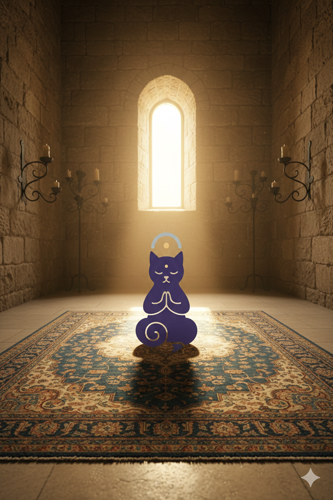

L'Incontro sulla Trama
Se cerchi un contatto diretto, un punto di ascolto o un’opinione disinteressata basata sulla filosofia della Chiesa della Contemplazione Autonoma, sei nel posto giusto. Qui, la parola non è una merce, ma un deposito.
Il Manifesto dell'Ascolto
Ciò che facciamo è molto più semplice, e forse per questo molto più profondo: ascoltiamo. Non con l'intenzione di giudicare, né di correggere, ma con attenzione totale.
Ascoltiamo il movimento dei tuoi pensieri, il loro incessante chiacchiericcio, le loro contraddizioni e le loro paure. Sul tappeto del tempio, ogni parola trova il suo spazio di quiete.
La Forza della Consapevolezza
Quando condividi un'ansia, un dolore o una preoccupazione, questi non scompaiono magicamente. Sarebbe infantile aspettarselo. Ma osserva cosa accade: nel momento in cui l'ansia viene portata alla luce della consapevolezza e vista senza condanna, perde parte della sua oscura pesantezza.
Non perché qualcuno l'abbia rimossa, ma perché hai avuto la Forza di guardarla in faccia.
Oltre la Soluzione: I Tre Cardini
Ciò che offriamo non è un metodo o una soluzione preconfezionata. È semplicemente uno spazio in cui puoi osservare il caos della tua mente senza esserne travolto. Qui troverai un punto di vista laterale:
🧘 La Quiete: Non è un traguardo da raggiungere con sforzo, ma emerge quando smetti di lottare contro ciò che è.
🌊 La Serenità: Non è rassegnazione passiva, ma la capacità di vedere la realtà con tutte le sue incertezze senza cercare disperatamente sicurezza nelle illusioni.
🛡️ La Forza: La determinazione di non lasciarsi schiacciare dal peso delle proprie ombre, ma di usarle come maestri di distacco.
Deposita il tuo Pensiero
Scrivimi per un parere, uno sfogo o un momento di condivisione silenziosa.